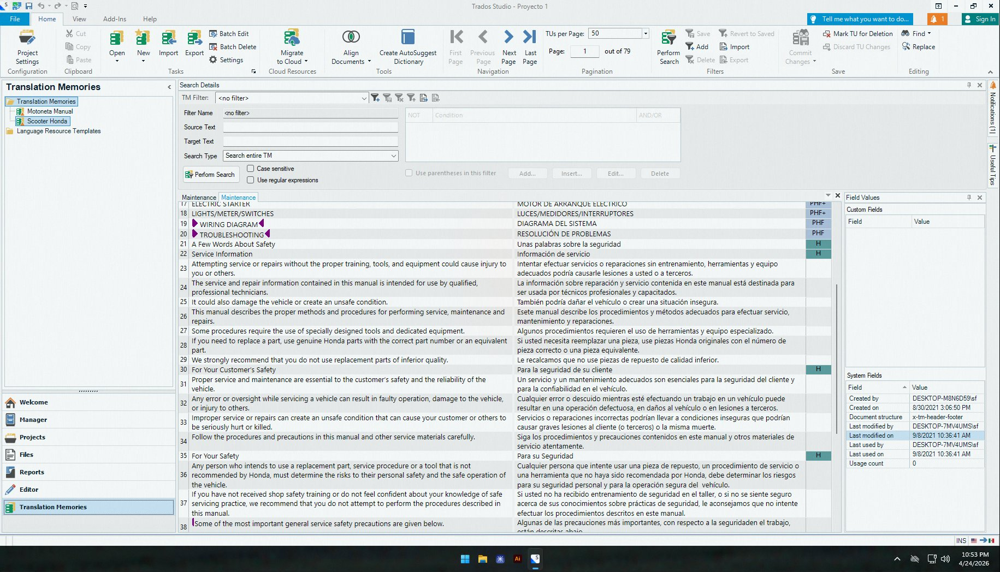
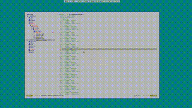
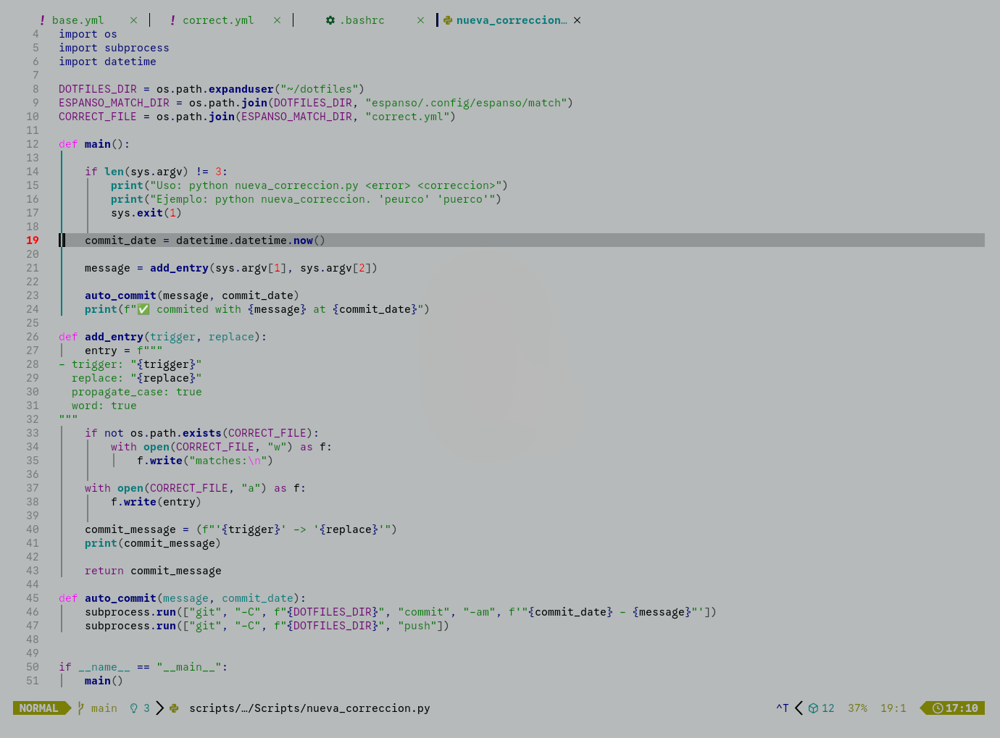
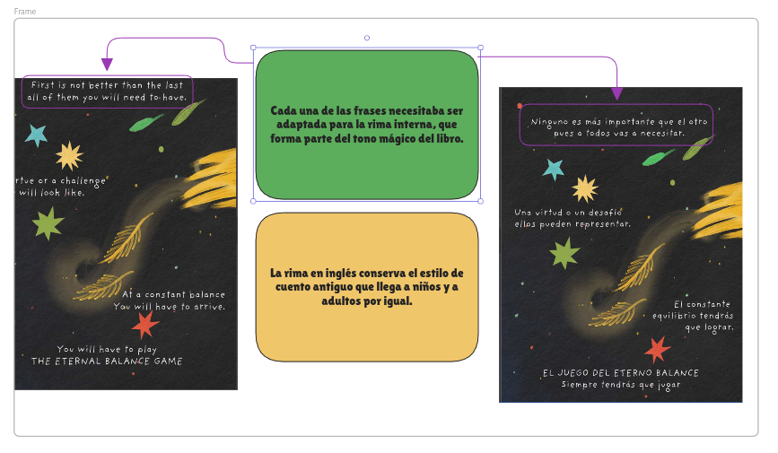
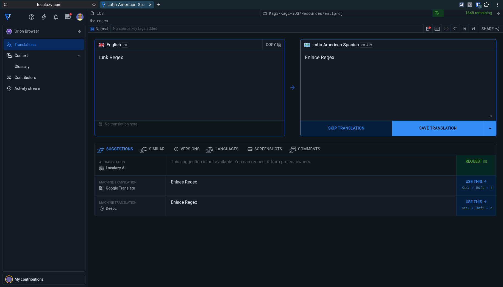
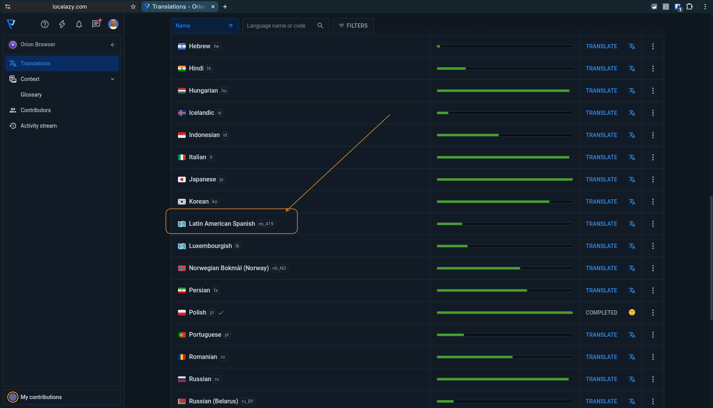
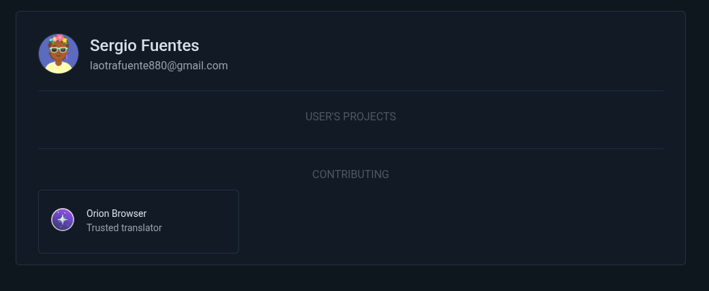

Localization Specialist · EN↔ES Technical & Literary Translation
Especialista en Localización · Traducción técnica y literaria EN↔ES
Seven years of freelance EN↔ES localization across automotive, medical, and literary domains. Works end-to-end: source analysis, SDL Trados project setup, terminology database management, SME (Subject Matter Expert) review coordination, layout correction in Illustrator, and final delivery. The four projects below represent the full range of that work.
Siete años de localización freelance EN↔ES en los sectores automotriz, médico y literario. Traduce en SDL Trados, mantiene bases terminológicas propias, coordina revisiones con expertos del área y corrige la maquetación resultante en Illustrator. Los cuatro proyectos a continuación muestran ese trabajo.
The Honda CHA125 series was commissioned for a specific audience: Hispanic mechanics working in California and in Baja California Norte — Mexicali and Tijuana. The documents needed to be fully self-sufficient in Spanish. The chief mechanic who coordinated the technical review had working familiarity with English but the rest of his team did not have full command of it, which meant every term had to stand on its own without any expectation that a technician would cross-reference the source.
La serie Honda CHA125 fue encargada para mecánicos hispanohablantes en California y en Baja California Norte: Mexicali y Tijuana. Los documentos tenían que funcionar solos en español. El jefe de mecánicos que revisó la terminología leía inglés, pero el resto del equipo no tenía la fluidez suficiente para consultar el original mientras trabaja, así que cada término tenía que quedar claro sin esa opción.
Spanish expands English by roughly 20–25% in technical prose. Across 42 manuals, this produced systematic layout overflow — specification tables, warning callouts, and section headings all exceeded their original frames. After completing the translation in SDL Trados, the layout corrections were applied in Adobe Illustrator, including a full re-pagination of each document. Page numbers shifted throughout to accommodate the longer text while preserving the manual's navigational structure.
El español ocupa entre un 20 y 25% más que el inglés en prosa técnica. En 42 manuales, eso se acumula. Tablas de especificaciones, recuadros de advertencia, encabezados: todo rebasó el espacio disponible. Terminada la traducción en Trados, el trabajo continuó en Illustrator: reencuadre de elementos, corrección de texto desbordado y una repaginación completa de cada documento para que los números de página siguieran teniendo sentido.
The challenge was fitting the right word, often longer, into a space designed for a shorter one, without losing the precision, and familiarity, a mechanic's safety depends on.
El reto no era encontrar la palabra correcta. Era hacerla caber en un espacio diseñado para una más corta, sin perder la precisión de la que depende la seguridad de un mecánico.

SDL Trados Studio — Translation Memory view for the Honda CHA125 series. Two project TMs visible: Motoneta Manual and Scooter Honda.
SDL Trados Studio — vista de Memoria de Traducción para la serie Honda CHA125. Dos TMs de proyecto visibles: Motoneta Manual y Scooter Honda.
Maintaining term consistency across 42 manuals — thousands of segment pairs over several months — required more than a static glossary. Espanso, a text expander tool, was configured as a live autocorrection layer running alongside Trados, catching typing errors and terminology inconsistencies before they reached the translation memory. Two language databases run in parallel: one in English, one in Spanish, and they are switched depending on which language is being localized.
Mantener la consistencia terminológica en 42 manuales, con miles de pares de segmentos a lo largo de varios meses, requería algo más que un glosario estático. Espanso corre en paralelo con Trados y corrige errores de escritura antes de que lleguen a la memoria de traducción. Hay dos bases: una en inglés y una en español, y se alternan según el idioma del proyecto.
Both databases are managed through a Python script that pushes new entries directly to the Espanso YAML configuration files. When a term spelling is agreed on, alternative spellings go into the script, which updates the corresponding database in a single run without requiring any manual file editing.
Las dos bases las gestiona un script de Python que actualiza los archivos YAML de Espanso directamente. Cuando se fija la ortografía de un término, sus variantes entran al script y la base se actualiza en una sola ejecución. Sin editar archivos a mano.

Term expansion databases shown in full.
Bases de expansión de texto mostradas en extenso.

Python script dedicated to Spanish database entries.
Script de Python dedicado a la incorporación de entradas en español.
The challenge in translating Tú eres la magia began with prosody. Every page in the original Spanish carries internal rhyme that works purposefully, giving the text a rhythm that followed the author's voice. A word-for-word English version would have preserved the meaning, but lost all of the author's intent.
El reto de traducir Tú eres la magia empezó con la prosodia. Cada página del original en español tiene rima interna: no es ornamental, es parte de cómo habla la autora. Una versión literal en inglés habría dicho lo mismo, pero no habría sonado igual. En un libro así, el sonido es parte del significado.
For several passages, the author was consulted directly to establish what each phrase was meant to do — its tone, its emotional register, the image it was meant to leave. Only after that conversation was it possible to attempt an English version that honored those intentions. The sample below shows one such passage: a sequence about the eternal balance game, where the Spanish rhyme scheme had to be rethought in English, not translated.
En varios pasajes consulté directamente a la autora para entender qué debía hacer cada frase: no solo el significado, sino el tono y lo que debía dejar en quien lo lee. Con eso fue posible intentar una versión en inglés que funcionara en sus propios términos. La muestra a continuación es uno de esos pasajes: el juego del equilibrio eterno, donde la rima en español tuvo que rehacerse en inglés, no traducirse.

Annotated comparison — EN (left) and ES (right).
Comparación anotada — EN (izquierda) y ES (derecha).
| Original title | Título original | Tú eres la magia · Paulina Flores | |
| Direction | Dirección | Spanish → English (ES→EN) | |
| Role | Rol | Full-book translation and editorial design | Traducción completa y diseño editorial |
| Published | Publicado | 2022 (independent) | |
| ISBN | 978-0578353364 | ||
| Verify | Verificar | amazon.com/dp/0578353369 ↗ |
Outside of client work, I also contribute to open-source projects. Orion Browser, built by
Kagi, is a privacy-focused browser for macOS, iOS, iPadOS, Windows, and Linux. For Latin
American Spanish —
es_419
— knowing the language wasn't enough. The strings are technical UI copy for users who know
their way around a browser, and that audience notices when a label reads like a translation.
Aparte del trabajo con clientes, también contribuyo a proyectos de código abierto. Orion
Browser, de Kagi, es un navegador para macOS, iOS, iPadOS, Windows y Linux con enfoque en
privacidad. Para el español latinoamericano —
es_419
— no bastaba con conocer el idioma. Las cadenas son de interfaz técnica para usuarios que
saben lo que hacen, y eso se nota cuando una etiqueta suena traducida en vez de nativa.
800+ strings translated and reviewed through Localazy. The project maintainers assigned me Trusted Translator status. In practice, the job is checking Google Translate and DeepL suggestions, accepting what works, and rewriting what's correct in the abstract but sounds off for a Latin American Spanish user — then keeping that consistent across terms that show up on dozens of different screens. Profile and contribution history are public at the link below.
Más de 800 cadenas traducidas y revisadas en Localazy. Los responsables del proyecto me asignaron estatus de Traductor de Confianza. En la práctica, el trabajo es revisar las sugerencias de Google Translate y DeepL, aceptar lo que funciona y reescribir lo que es correcto en abstracto pero suena raro para un usuario latinoamericano, manteniendo esa consistencia en los términos que aparecen en decenas de pantallas distintas. El perfil y el historial de contribuciones son públicos.

Localazy editor — EN source vs. es_419 target. Machine translation suggestions from Google Translate and DeepL shown below for evaluation.
Editor de Localazy — fuente EN vs. destino es_419. Sugerencias de traducción automática de Google Translate y DeepL mostradas abajo para evaluación.

Orion Browser on Localazy — Latin American Spanish (es_419) among 30+ active language locales.
Orion Browser en Localazy — español latinoamericano (es_419) entre más de 30 variantes de idioma activas.

Public Localazy profile — Trusted Translator on Orion Browser by Kagi.
Perfil público en Localazy — Traductor de Confianza en Orion Browser de Kagi.